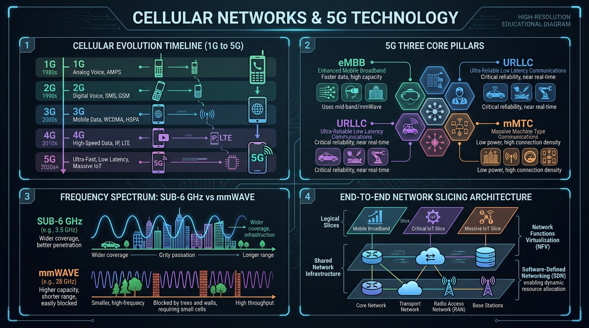

Understand the architectural evolution from 1G analog voice to 5G New Radio (NR), 5G's three core pillars (eMBB, URLLC, mMTC), mmWave frequencies, and Network Slicing.
A Cellular Network divides a geographic service area into small hexagonal geographic units called **Cells**, each served by a central base station (eNodeB / gNodeB).
5G New Radio (NR) is designed to serve diverse use cases beyond smartphone data through **3 Core Pillars** defined by ITU IMT-2020:
| 5G Spectrum Band | Frequency Range | Coverage & Range | Speed & Performance |
|---|---|---|---|
| Sub-6 GHz (Low & Mid-Band) | 600 MHz to 6 GHz | Wide coverage area; easily penetrates walls and obstacles. | Moderate speeds (100 Mbps – 1 Gbps). Form basis of global 5G coverage. |
| mmWave (High-Band) | 24 GHz to 100 GHz | Ultra-short range (< 500 meters); blocked by walls, foliage, and rain. | Blazing multi-gigabit speeds (up to 10 Gbps) with ultra-low latency. Used in stadiums & dense urban hotspots. |
Network Slicing uses Software Defined Networking (SDN) and Network Functions Virtualization (NFV) to multiplex virtual, isolated end-to-end networks over a single shared physical 5G infrastructure. Each "slice" is customized with specific QoS, bandwidth, and latency parameters for different industries!

| Generation | Primary Technology | Max Speed | Multiplexing / Access | Core Network |
|---|---|---|---|---|
| 1G | AMPS, NMT | 2.4 kbps | FDMA | Analog PSTN |
| 2G | GSM, CDMA, EDGE | 384 kbps | TDMA / CDMA | Digital Circuit-Switched |
| 3G | UMTS, WCDMA, HSPA | 21 Mbps | CDMA | Packet-Switched + Circuit |
| 4G | LTE, LTE-Advanced | 1 Gbps | OFDMA / SC-FDMA | All-IP (EPC) |
| 5G | 5G NR (Sub-6 & mmWave) | 20 Gbps | OFDMA + Massive MIMO | Service-Based All-IP Core |